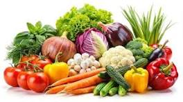

Vegetables are an important part of a healthy and balanced diet. They provide essential nutrients such as vitamins, minerals, fiber, and antioxidants that help keep our body strong and healthy. Common vegetables include carrots, potatoes, tomatoes, spinach, cabbage, cauliflower, beans, peas, and onions.Vegetables come in many different colors, shapes, and flavors. They can be eaten raw, boiled, steamed, roasted, or cooked in different dishes. Eating a variety of vegetables regularly supports good digestion, strengthens the immune system, and helps maintain overall health.